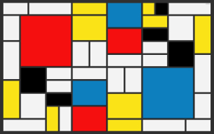
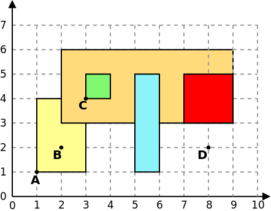

Para efeitos da nota atribuida à resolução de exercícios ao longo do semestre - Submeter até 23:59 de 13 de Novembro
(o problema continuará depois disponível para submissão, mas sem contar para a nota)
[para perceber o contexto do problema deve ler o guião da aula #03]
Neste problema deverá apenas submeter uma classe Rectangle (e não um programa completo).
Para este problema pode assumir que o seu código terá acesso a uma classe Point assim definida:
// Uma classe simples para representar um ponto 2D class Point { int x, y; Point() { x = y = 0; } Point(int x0, int y0) { x = x0; y = y0; } public String toString() { return "(" + x + "," + y + ")"; } }
A sua tarefa é criar uma classe Rectangle para representar um rectângulo. A classe deverá ter como atributos (variáveis) dois pontos (da classe anterior), representando os pontos inferior esquerdo e superior direito do rectângulo e deverá ter os seguintes métodos:
Um exemplo de utilização seria:
class TestRectangle { public static void main(String[] args) { Point a = new Point(1,1); Point b = new Point(2,2); Point c = new Point(3,4); Point d = new Point(8,2); Rectangle amarelo = new Rectangle(a, c); Rectangle laranja = new Rectangle(2, 3, 9, 6); Rectangle verde = new Rectangle(3, 4, 4, 5); Rectangle azul = new Rectangle(5, 1, 6, 5); Rectangle vermelho = new Rectangle(7, 3, 9, 5); System.out.println("Perimetro do retangulo amarelo = " + amarelo.perimeter()); // 10 System.out.println("Perimetro do retangulo laranja = " + laranja.perimeter()); // 20 System.out.println("Area do retangulo amarelo = " + amarelo.area()); // 6 System.out.println("Area do retangulo laranja = " + laranja.area()); // 21 System.out.println("Ponto B dentro rectangulo amarelo? " + amarelo.pointInside(b)); // true System.out.println("Ponto D dentro rectangulo amarelo? " + amarelo.pointInside(d)); // false System.out.println("Retangulo verde dentro do laranja? " + laranja.rectangleInside(verde)); // true System.out.println("Retangulo azul dentro do laranja? " + laranja.rectangleInside(azul)); // false System.out.println("Retangulo vermelho dentro do laranja? " + laranja.rectangleInside(vermelho)); // true } }
Este exemplo corresponde à seguinte figura:

Deverá apenas submeter a classe Rectangle. O Mooshak irá criar várias instâncias da sua classe usando os construtores definido e irá fazer uma série de testes aos métodos por si implementados (como mostrado no exemplo de utilização).
É garantido que o construtor é chamado de forma correcta (ponto inferior esquerdo e ponto superior direito) e que todos os números são inteiros positivos que cabem num int.
Estruturas de Dados (CC1007)
DCC/FCUP - Faculdade de Ciências da Universidade do Porto